Write smart contracts in Solidity and deploy them to the Ethereum blockchain using Ark SmartBridged transactions.
Find Out MoreUsing ACES, you can deploy smart contracts to the Ethereum blockchain using only Ark transactions and this application. Simply write your contracts and call them to be deployed using an Ark transaction.
Go DeeperTransferring Ark to Ethereum is easy. In the ACES UI, you may click the Ethereum Transfer tab to pull up the transfer form. On this form you will need to provide three fields, 1) the "Return Ark Address" which is the address you'd like to receive excess ark back, if you happen to send too much. 2) The "Recipient Eth Address" which is the ethereum address you'd like to transfer the ark value to. 3) "Eth Amount" which is the amount of ether you'd like to send to the address. The listener will compute how much equivalent ark you must send to the listener based on this value.
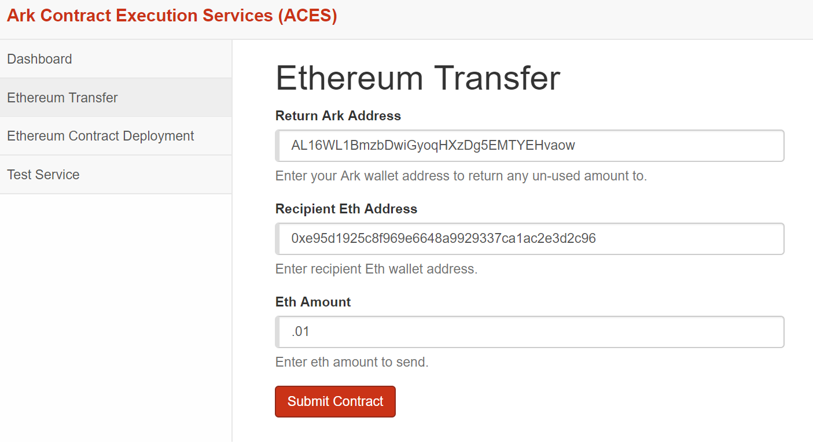Once you submit the form you will be taken to the listener status page. Initially you will see this page in yellow with the message that it is on and listening to the Ark blockchain. In the red box you'll see the details of the transaction that ACES is listening for. You must send the required ark amount to the Service Ark Address listed and include the SmartBridge Text provided to you.
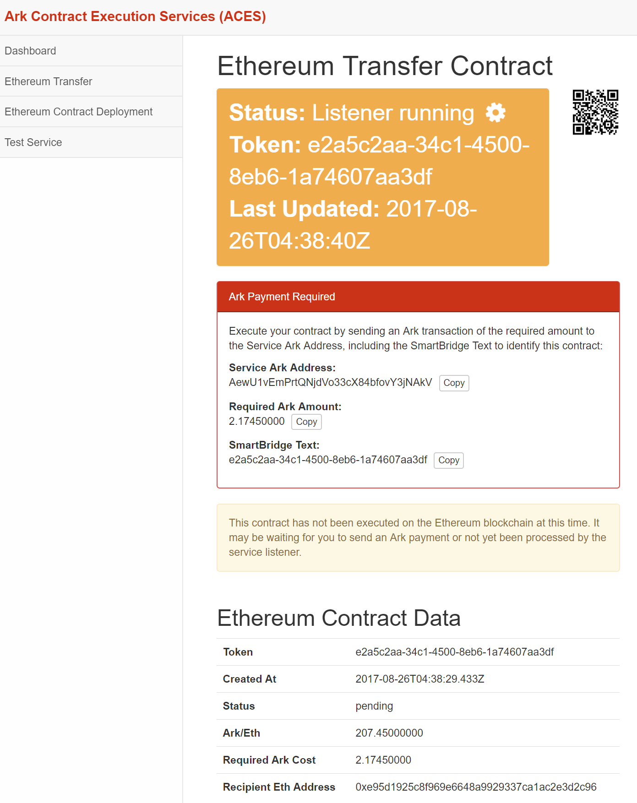Go to your preferred method of Ark transaction. In this example we will use the standard Ark Desktop Wallet. Submit the transaction as required by the listener.
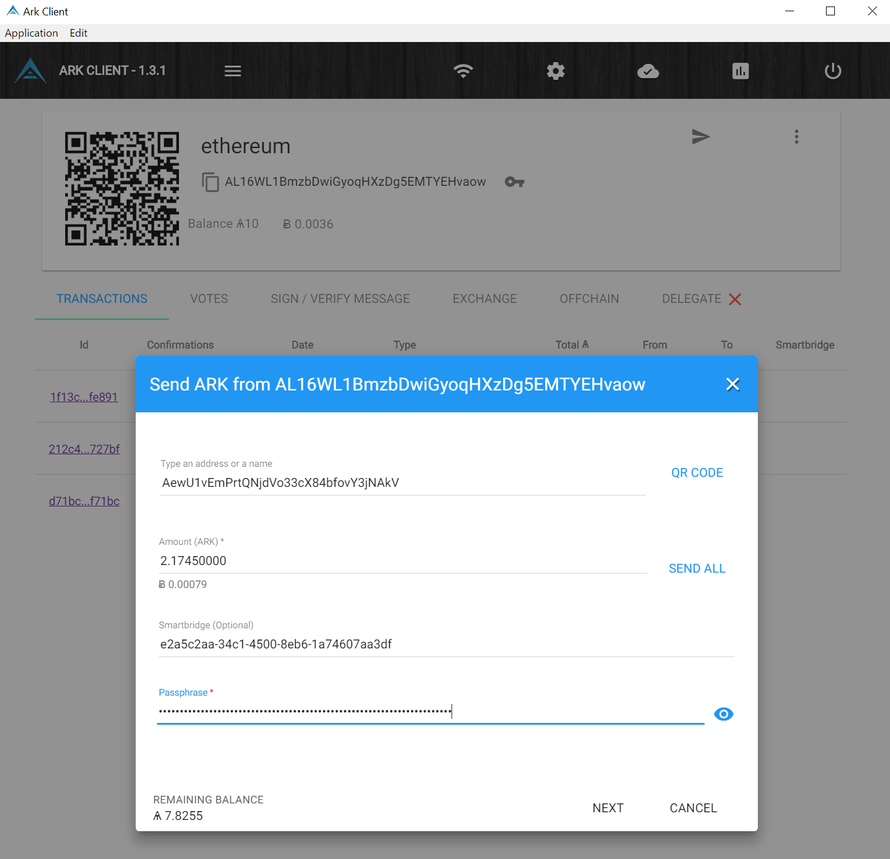Once submitted and confirmed once, the listener will turn green to show it was a success.
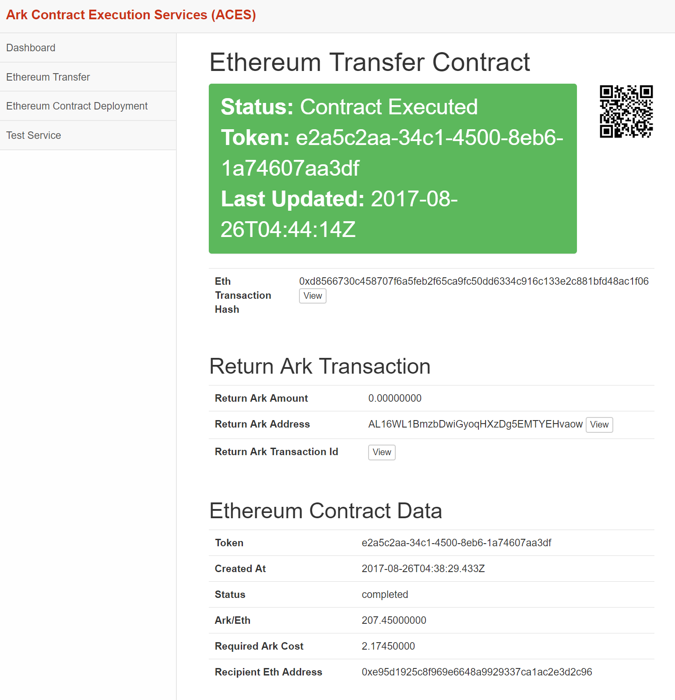You can now confirm that the transfer was a success on the Ethereum blockchain by clicking the "Eth Transaction Hash".
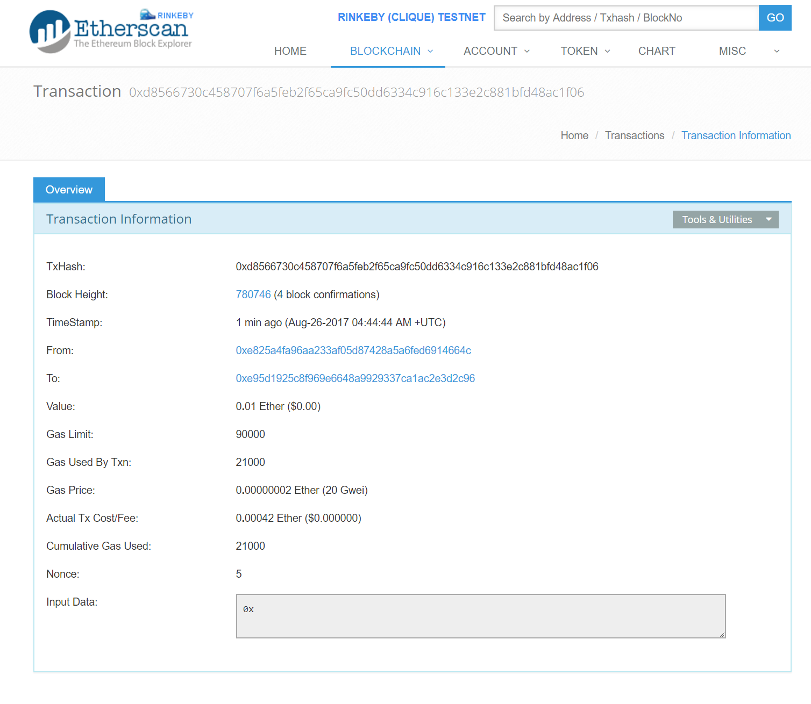The first step for deploying a contract is to write and compile a contract using the Ethereum Remix Compiler.
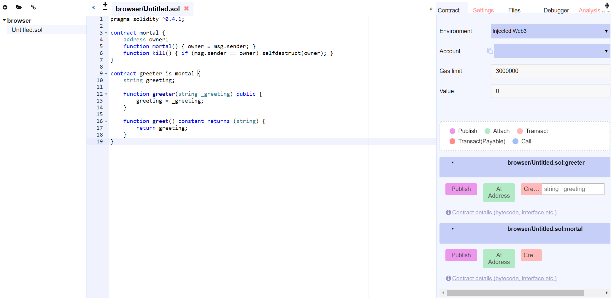Once your code is complete, you can gather the necessary inputs by clicking the contract details link as shown below.
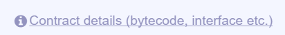We are interested in the bytecode and interface lines, which we will paste into the respective field on the ACES contract form.
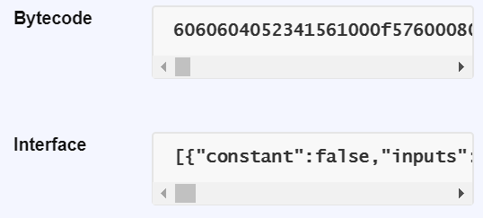Once your form is filled out, it should look something like this:
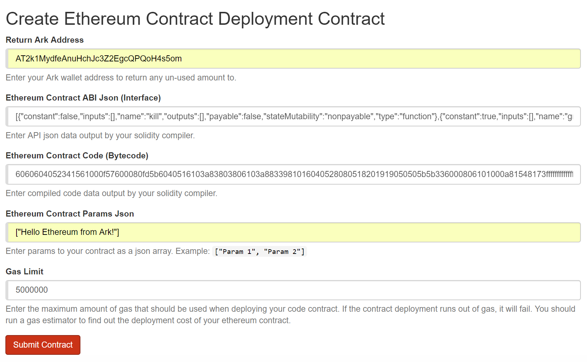When you are ready, submit your form. You will be taken to the listener status page.
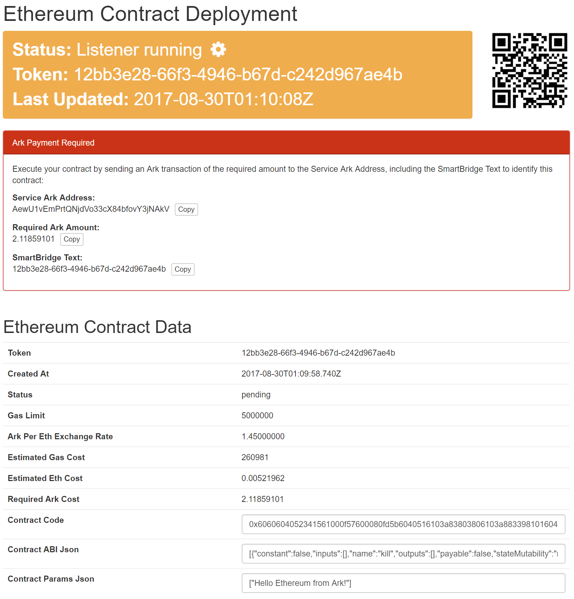The listener status page shows your the current status of the listener as well as provides instructions on what type of transaction needs to occur on the Ark blockchain for the listener to act. Send the provided Required Ark Amount to the Service Ark Address and include the SmartBridge Text. You may clip the copy buttons to grab these values. Your transaction in the ArkClient should appear similarly as follows:
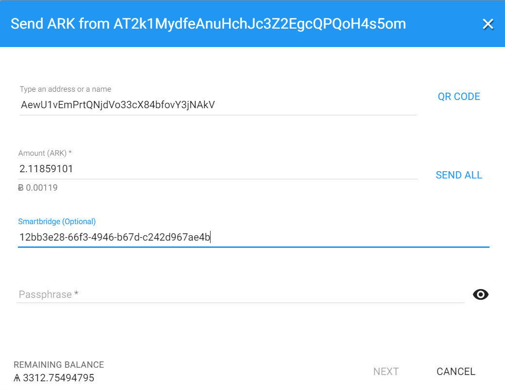Once your transaction is submitted, wait for one confirmation on the Ark blockchain and shortly afterwards you will see the listener service turn green with success.
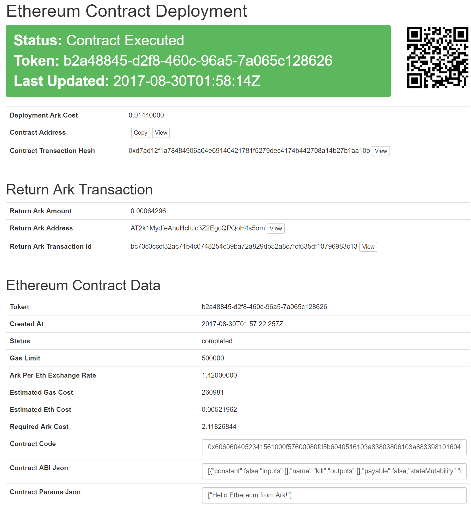Click on the Contract Transaction Hash View button to be taken to the ethereum blockchain explorer for the contract your just submitted.
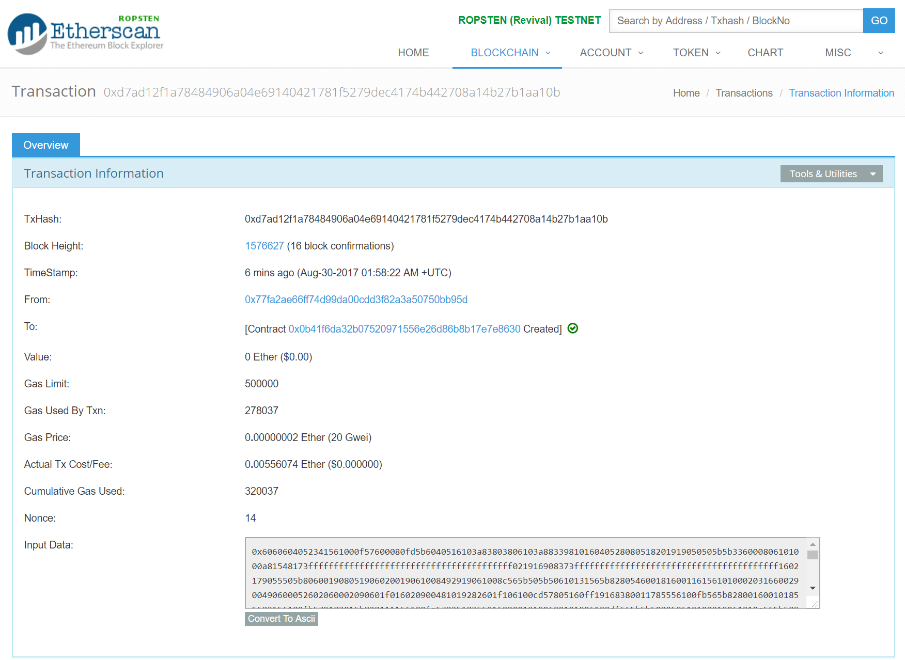Click the 'Convert to ASCII' button underneath the input data and scroll down to the bottom to see the message!
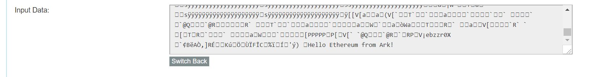